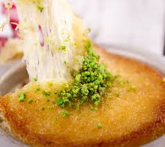

Presentation
 Competences
Devellopement
Système
Réseaux
Langues
Qualités
Experience professionelles
Bénévolat
Venir en aide au sans abris en leurs apportant de quoi manger et des produits de première nécessité.
EUROFIDEC- Cabinet d'expertices comptable
Répondre aux appels Téléphoniques
Pets sitting
Laver les chats / Faire leurs toilettes
Brasserie les deux frères- Barman
Préparation des commandes
Entretien des salles/Terrasses
Certifications
Certifcation Cisco Packet Tracer
Formation
2024/en cours BTS Informatique (SIO)
Veille technologique
C